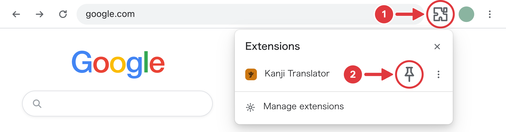
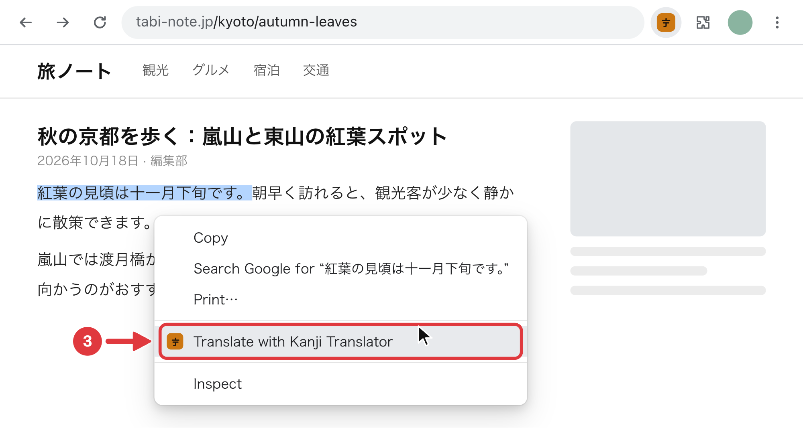
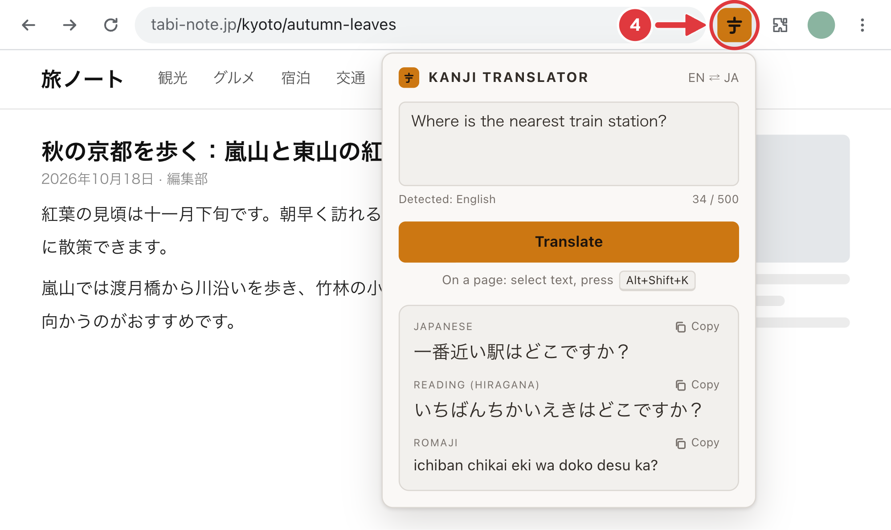

Chrome hides new extensions behind the puzzle icon. Pin Kanji Translator first — it takes two clicks. No new tab page, no home page changes, nothing runs until you ask.

Try it here
この電車は京都駅に止まりますか？
Select the line, right-click, and choose “Translate with Kanji Translator”.

It works with English and Japanese on most websites. The translation appears in a card next to the text.
Type English or Japanese and press Translate.
